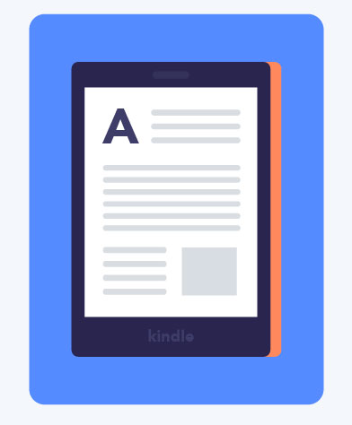
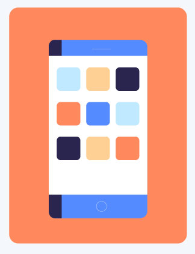

A mobile device is a general term for any type of handheld computer. These devices are designed to be extremely portable, and they can often fit in your hand. Some mobile devices—like tablets, e-readers, and smartphones—are powerful enough to do many of the same things you can do with a desktop or laptop computer.
Like laptops, tablet computers are designed to be portable. However, they provide a different computing experience. The most obvious difference is that tablet computers don't have keyboards or touchpads. Instead, the entire screen is touch-sensitive, allowing you to type on a virtual keyboard and use your finger as a mouse pointer.
Tablet computers can't necessarily do everything traditional computers can do. For many people, a traditional computer like a desktop or laptop is still needed in order to use some programs. However, the convenience of a tablet computer means it may be ideal as a second computer.
E-book readers —also called e-readers —are similar to tablet computers, except they are mainly designed for reading e-books (digital, downloadable books). Notable examples include the Amazon Kindle, Barnes & Noble Nook, and Kobo. Most e-readers use an e-ink display, which is easier to read than a traditional computer display. You can even read in bright sunlight, just like if you were reading a regular book.
A smartphone is a more powerful version of a traditional cell phone. In addition to the same basic features—phone calls, voicemail, text messaging—smartphones can connect to the Internet over Wi-Fi or a cellular network (which requires purchasing a monthly data plan). This means you can use a smartphone for the same things you would normally do on a computer, such as checking your email, browsing the Web, or shopping online.
Most smartphones use a touch-sensitive screen, meaning there isn't a physical keyboard on the device. Instead, you'll type on a virtual keyboard and use your fingers to interact with the display. Other standard features include a high-quality digital camera and the ability to play digital music and video files. For many people, a smartphone can actually replace electronics like an old laptop, digital music player, and digital camera in the same device.